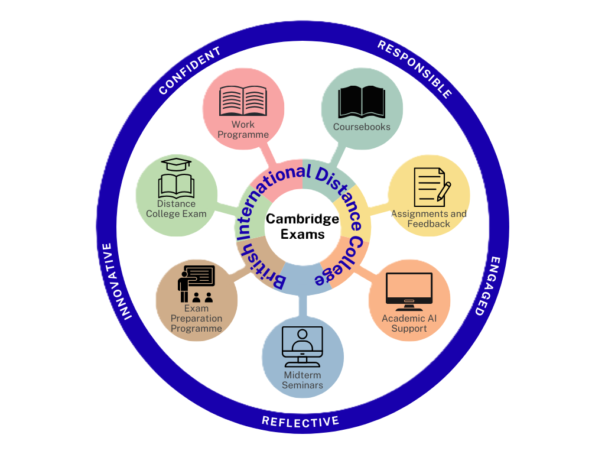

Home chevron_right Distance Campus
About British International Distance College
The British International Distance College was founded in 2001 to support ambitious students who require a different approach to learning. Rather than conformed to the rigidity of traditional schooling, our courses are autonomous to our students with guidelines and flexible learning.
Our offices are located in Bryanston, at our BIC Bryanston Campus. A team of highly qualified tutors work with the administration staff to offer support in academic content and your education journey.
BIDC is a registered Cambridge Exam Centre (ZA557). Our students are able to write through the Distance College with the benefits full-time College students.
What is distance learning?
Distance learning is often confused with online learning. While there are similarities to learning online, distance learning differs in structure and approach, as well how technology is used. In distance learning, learning is not exclusively reliant on technology and online resources, but used as a supporting resource for learning.
Although an internet access is not always required for distance learning, we have embraced technology by implementing a hybrid approach to learning. We offer academic support through material accessible online, as well as provide access to Tutors through an online platform to help young students understand concepts that are more complex. Additional guidance is also available with our subject specialists at the request of the student.
The in course structure in distance learning is suited for students to work at their own pace, rather than following an online schedule with restricted access. The flexibility offered through distance learning means that there are few structured deadlines, for assessments and content pace. Our students are able to work through their syllabuses as fast or as methodical as they wish.
Distance learning focuses on learning remotely with minimal interaction with teachers and other students to promote independence. This helps students engage with resources in their own unique way. BIDC has used this model of Distance Learning and structured a framework that supports students in their courses. Still using the flexibility with few structured deadlines, BIDC has incorporated some recommendations to submissions where necessary to help students set their own deadlines.
What we offer
The BIDC Academic year begins on 1 October, with registrations of courses, whether new or additional, continuing up until the end of July the following year. This is to provide flexibility to all students, regardless of where you are in your education trajectory. We further support this flexibility by using the distance learning model of having few structured deadlines for assignment in courses, so students enrolling throughout the year have the same academic opportunities as their peers.
We specialise in helping each of our students to shape their own path forward with qualifications to advance their future career in whatever field they choose. Rather than moulding students to think the same way, we aim to develop the next generation of leaders, creators, and self-thinkers.
Our students are critical thinkers immensely sought after by universities worldwide because of their creative approach. They succeed at university, and in life, because they have already experienced a college-style of learning in a truly international setting, making them invaluable in future employment. Our courses offer students autonomy in their academic decisions that supports independence in learning, a skill that university struggle to develop in their first year.
While no classes are offered at our Campus, BIDC we do accept walk-in appointments at our offices to discuss academic prospects for students who wish to enrol. However, it is advised to book an appointment with a BIDC Student Advisor to discuss your academic prospects. This academic consultation is continuously offered to BIDC students until their completion with BIDC.
We are the only College of its kind in South Africa, offering such a flexible pathway and such a variety of specialisation in the Cambridge Curriculum. BIDC offers a complete science journey from Foundation to AS Level. Our students will have the choice of our premium science courses, which exposes them to all branches of science at all levels. This means that our students can complete all school sciences at BIDC with four Cambridge qualifications*.
Foundation | IGCSE 01 (Core) | IGCSE 02 (Extended) | AS Level |
Checkpoint Combined Science | IGCSE Combined Science | IGCSE Coordinated Science (Double Award) | Biology Chemistry Physics |
* Dependent on course registration and Cambridge Exam entry.
Students register to receive a complete BIDC course. This includes numerous avenues in academic support. Furthermore, supporting Cambridge material is made available to our students to ensure further control over their studies.
